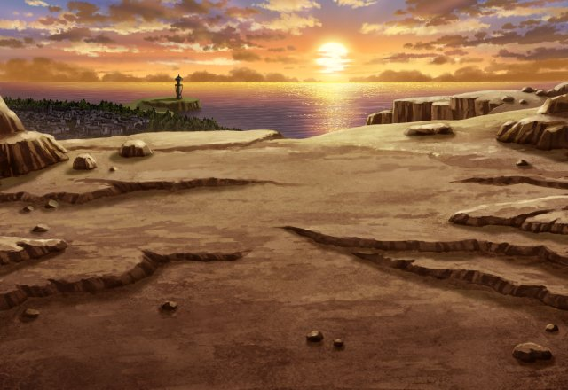
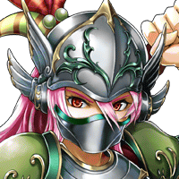

ディン
どうやら王国の兵士のヤツら、 やってくれたようだな。
ローランド
ついに カルデスまでの道が開けましたな。
エデア
兵士の皆さんが作ってくれた道です。 無駄にはできません。


エデア
…………。
ディン
まさか、アンタ１人でカルデスと戦う、 とか言い出すんじゃないだろうな。
エデア
カルデスとの戦いは、生きて帰れるか わからないものになると思われます。
エデア
ですので、 今一度、お礼を言いたかったのです。
エデア
みんな、私なんかに力を貸してくれて 本当にありがとう。
ロクス
エデア様がボクたちを 導いてくれたおかげで、
ロクス
いち早くカルデスの脅威に 備えることができたんです。
ロクス
それにカルデス打倒は、 もうエデア様だけの目的じゃないんです。
ディン
ロクスも たまにはまともなこと言うじゃないか。
ローランド
これから我々が挑む敵は あまりにも強大。
ローランド
本来ならば人が敵うような 相手ではない。
ロクス
ボクはエデア様のお役に立つために 技を磨き続けてきたんだ！
ディン
俺も相手が神だからって あれこれ考えてる場合じゃねーか。
ディン
今回は少しばかり本気を出すことに なりそうだぜ。
ディン
だけど、力を溜めるのに 時間がかかり過ぎて実戦じゃ使いづらい。
ロクス
お前なんかに言われなくても わかっている！
ローランド
お前たちも少しは 戦士の顔になってきたようだな。
ディン
お、ロー爺のありがたいお話が また始まるのか？
ロクス
話はなるべく手短にお願いします。 決戦前に疲れたくはないので。
ローランド
エデア殿、こやつらに礼など不要です。 また付け上がりますからな！
エデア
フフッ、確かにお礼を言うのは、 まだ早かったかもしれませんね。
エデア
そして、戻った時、 あらためてお礼を言わせてください。